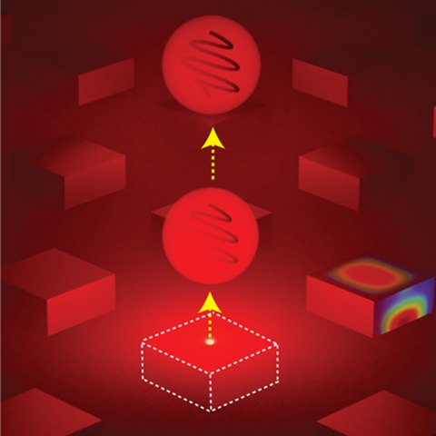

Structured quantum light sources
Engineered metasurfaces that shape quantum light. Single semiconductor quantum dots give bright, directional single photons. ScAlGaN/InGaN quantum-well metasurfaces generate entangled photon pairs through intersubband SPDC in films only nanometers thick.